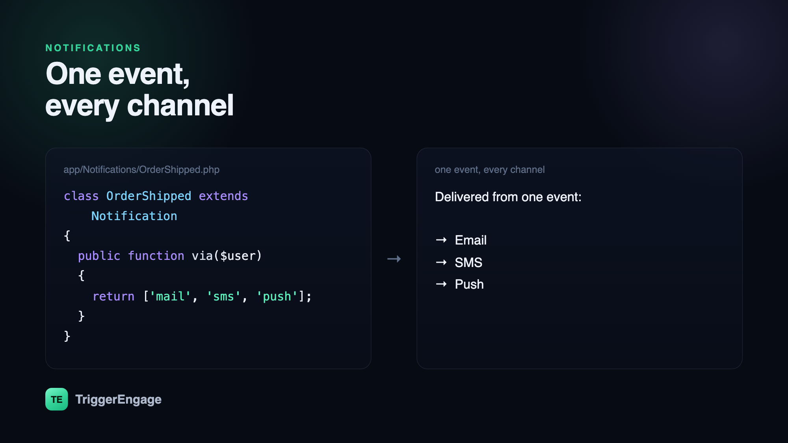

Every serious app needs to tell users things: your order shipped, someone mentioned you, your payment failed, your trial ends tomorrow. Do it ad hoc — a mail here, an SMS call there — and you end up with delivery logic smeared across controllers, no single place to add a channel, and no way for a user to say "email me, but don't text me." Laravel's notification system gives you a clean alternative: one class per notification, a via() method that decides the channels, and a formatter per channel. This guide builds a notification system in Laravel from that core up to queues, user preferences, and the point where you outgrow it.

via() method — the same event fans out to every channel a user has opted into.The core idea: one class, many channels
Laravel models a notification as a single class. Its via() method returns an array of channels the notification should go out on, and a matching method formats the payload for each — toMail() for email, toArray() for the database or a broadcast, and a driver-specific method for SMS or push. The message content lives in one file, and the channels are declared in one place:
class OrderShipped extends Notification
{
public function via($notifiable): array
{
return ['mail', 'sms', 'push'];
}
public function toMail($notifiable): MailMessage
{
return (new MailMessage)
->subject('Your order is on the way')
->line("Order #{$this->order->id} just shipped.");
}
}To send it, you either call $user->notify(new OrderShipped($order)) via the Notifiable trait, or use the Notification facade to reach many recipients at once. That single call fans out to every channel via() returned — no per-channel plumbing in your controller.
Adding channels beyond mail and database
Out of the box Laravel ships mail, database, and broadcast channels. SMS and push arrive through notification channel packages: you install a driver for your provider, add its credentials, implement a toSms() or toPush() method on the notification, and return the channel's class from via(). The recipient tells the channel where to deliver through a routeNotificationForSms() (or equivalent) method on the notifiable model — usually reading a phone number or device token off the user. The mechanics of each channel are worth their own read; see our tutorials on sending SMS in Laravel and sending push notifications in Laravel for provider setup and gotchas.
Queue everything
Sending a notification often means calling an external API — an SMTP server, an SMS gateway, a push service. You do not want any of that happening inside a web request, where a slow provider stalls the response and a failure bubbles up to the user. Implement ShouldQueue on the notification and Laravel pushes the send to a background worker automatically:
class OrderShipped extends Notification implements ShouldQueue
{
use Queueable;
// ...
}Queuing buys you three things at once: the request returns instantly, each channel retries on transient failure, and a wobble in one provider never takes down the others. For anything beyond a trivial app, treat queued as the default and synchronous as the exception.
Letting users choose their channels
The moment you send more than one kind of notification, users will want control — email for receipts, push for mentions, nothing at all for tips. The clean pattern is to store per-user, per-category channel preferences and read them inside via(), so the notification decides its own channels at send time:
public function via($notifiable): array
{
return $notifiable
->channelsFor('order_updates'); // e.g. ['mail', 'push']
}This keeps preference logic in one place and out of your controllers. It also respects consent by design — if a user opted out of a category, via() simply returns fewer channels and nothing is sent. That same respect for permission underpins healthy email programs; see our guide to email consent for the principles.
Where Laravel notifications stop being enough
Laravel's system is excellent for what it is: discrete, code-triggered messages. A receipt, a password reset, a "someone commented" alert — one event, one send, done. It starts to strain the moment your messaging becomes a journey rather than a single shot. Consider a trial-conversion flow: welcome now, a tips email on day three only if the user hasn't activated, a push on day six, a discount on day thirteen, and everyone exits the instant they upgrade. Expressing that with notification classes and scheduled jobs quickly becomes a tangle of state, timers, and conditionals scattered across your codebase.
That is the boundary between notifications and engagement. A single alert is a notification; a multi-step, branching, behavior-aware sequence is a lifecycle flow, and it wants a system built for orchestration — waits, branches, segments, A/B splits, and analytics across every channel. Tools in this space include Customer.io, Braze, and Intercom; TriggerEngage brings the same model self-hosted. You can keep firing the underlying events from Laravel and let that layer decide the messaging. Our tutorial on event-based email in Laravel shows the pattern: emit an event from your app, and let an engagement engine handle the journey.
| Use case | Reach for |
|---|---|
| Receipt, alert, password reset | Laravel Notification class |
| One event, one immediate send | Laravel Notification class |
| Multi-step onboarding or win-back | Engagement platform / journey engine |
| Segments, A/B tests, cross-channel analytics | Engagement platform / journey engine |